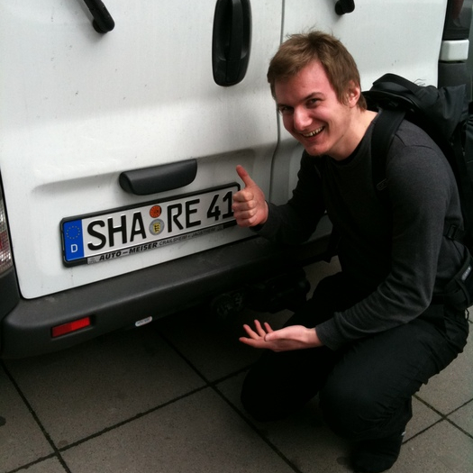

Jan-Christoph Borchardt is information designer, user researcher and activist for free culture, free software & an open web. He improves the user experience of free & open source web applications, now mainly as Design Dictator for the Unhosted project. Previously he did the interface & interaction design for ownCloud and started Libre Projects, a directory of free software web applications.
